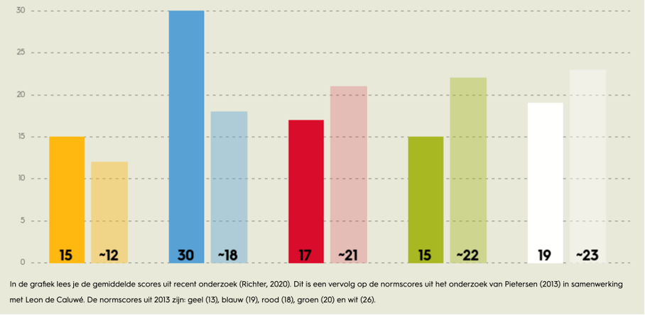

Smart me
Edin Berisha
Aangezien ik niet zo goed wist wat ik hier moest plaatsen, wil ik mezelf kort voorstellen.
Mijn naam is Edin Berisha, ik ben 22 jaar oud en ik ben derdejaars student Bedrijfskunde aan
de HAN in Nijmegen.
Mijn toekomstvisie is om mezelf te kunnen omschrijven als een gezonde, gelukkige en
passievolle zakenman. Ik streef ernaar om mijn zaken goed op orde te hebben, goed in mijn
vel te zitten en voldoening te halen uit mijn werk. Daarnaast wil ik in staat zijn om op
verschillende dingen te kunnen focussen en effectief te multitasken.
Om deze doelen te bereiken, ben ik vastbesloten om mezelf voortdurend te ontwikkelen,
waardevolle ervaring op te bouwen en sterke, duurzame relaties aan te gaan. Ik geloof dat
persoonlijke groei, kennis en netwerken de sleutel zijn tot succes in de zakenwereld.
Ik kijk ernaar uit om mijn kennis en vaardigheden verder te verdiepen en mijn ambities waar
te maken. Met een sterke basis in bedrijfskunde en een duidelijke visie voor de toekomst,
ben ik gemotiveerd om elke kans te benutten die bijdraagt aan mijn professionele en
persoonlijke ontwikkeling.
Lessen van smart me  Uit de kleurentest van TwynstraGudde blijkt dat mijn scores als volgt zijn: Geel (Macht en politiek): 15 Blauw (Rationeel en gestructureerd): 30 Rood (Mens en cultuur): 17 Groen (Leren en ontwikkelen): 15 Wit (Zichzelf organiserend en emergent): 19 Geel (Macht en politiek) Mijn score op geel is 15, wat iets hoger is dan de recente gemiddelde score en vergelijkbaar met de normscore van 2013. Dit geeft aan dat ik een redelijke mate van interesse en vaardigheid heb in het navigeren van belangen en macht binnen organisaties. Ik ben in staat om door middel van onderhandelingen en overtuigen mijn doelen te bereiken. Blauw (Rationeel en gestructureerd) Met een score van 30 op blauw, scoor ik aanzienlijk hoger dan de recente gemiddelde score en de normscore van 2013. Dit duidt erop dat ik een sterke voorkeur heb voor een gestructureerde en planmatige aanpak. Ik hecht veel waarde aan duidelijke doelen, plannen en procedures en ben waarschijnlijk goed in het organiseren en controleren van processen om veranderingen te realiseren. Rood (Mens en cultuur) Mijn score op rood is 17, wat net onder zowel de recente gemiddelde score als de normscore van 2013 ligt. Dit betekent dat ik iets minder gericht ben op de mens- en cultuurkant van verandering dan de gemiddelde persoon. Hoewel ik relaties en samenwerking belangrijk vind, ligt mijn focus vaak meer op andere aspecten van verandering. Groen (Leren en ontwikkelen) Met een score van 15 op groen, scoor ik lager dan zowel de recente gemiddelde score als de normscore van 2013. Dit geeft aan dat ik minder nadruk leg op leren en persoonlijke ontwikkeling binnen veranderingsprocessen. Hoewel ik waarde hecht aan kennis en ontwikkeling, focus ik me waarschijnlijk meer op structuur en controle. Wit (Zichzelf organiserend en emergent) Mijn score op wit is 19, wat iets lager is dan de recente gemiddelde score en de normscore van 2013. Dit suggereert dat ik minder geneigd ben om te vertrouwen op zelforganisatie en natuurlijke, emergente processen voor verandering. Ik heb wellicht een voorkeur voor meer gestructureerde benaderingen, zoals blijkt uit mijn hoge score op blauw. Conclusie Deze testresultaten wijzen op mijn sterke voorkeur voor gestructureerde en rationele aanpakken (blauw), met een redelijke balans in het gebruik van macht en politiek (geel). Ik ben minder geneigd om te focussen op menselijke relaties (rood), leren en ontwikkelen (groen), en zelforganiserende processen (wit). Deze inzichten helpen me om bewust te zijn van mijn sterke en zwakke punten in veranderingsmanagement en om strategieën te ontwikkelen die mijn natuurlijke voorkeuren aanvullen.
| Leerdoelen/ competenties | Uitgelegd |
|---|---|
| Je toont veel initiatief en betrokkenheid | Uitleg over het dit |
| je menigen of adviezen zijn gebaseerd op gedegen onderzoek | Item |
| je kiest ambitieze leerdoelen en verkent disciplines buiten je eigen vakgebied. | Item |
| Je bent bewist bezig met je persoonlijke groei. | Item |
| Je gebruikt feedback en zelfreflectie om te leren. | Item |
| Je helpt actief anderen groeien | Item |
| Eigen leerdoel | Item |